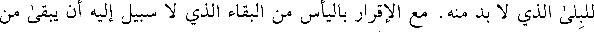
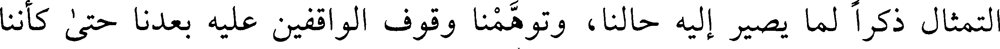
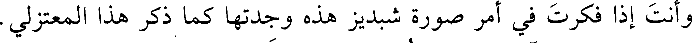
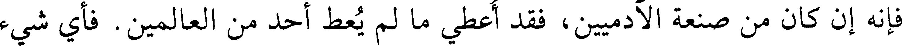
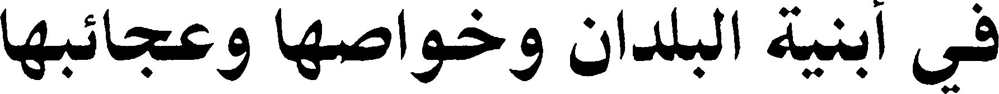
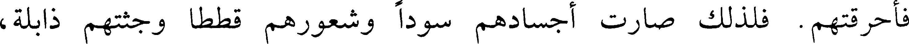
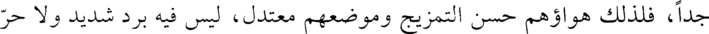

000405.gt.txt

الأرض ذبة (1) وزنابير.
000406.gt.txt

وعمل بقرية من قرى ماسبندان تسمى تومان، طلسما لأجمة كانت هناك لا
000407.gt.txt

يسلكها أحد في الشتاء إلا غرق في طينها.
000408.gt.txt

وعمل في هذه القرية أيضا طلسما لحمة كانت هناك ماؤها شديد الحر.
000410.gt.txt

وصيفا ولم ينقطع في وقت من أوقات السنة.
000411.gt.txt

ومن عجائب قرميسين أن الهواء لم يكن يهب فيها في الصيف ليلا ولا نهارا.
000412.gt.txt

فشكا قباذ إلى بليناس ذلك، فعمل لها طلسما حتى هب الهواء بها على ما يهب في
000413.gt.txt

غيرها.
000414.gt.txt

وطلسم أيضا قرية بالقرب منها يقال لها كركان. وكانت تقوم بها سوق في
000417.gt.txt

بيده لم يخشها
000418.gt.txt

422
000419.gt.txt

ومن عجائبها وهو أحد عجائب الدنيا، صورة شبديز (1) . وهو في قرية يقال
000420.gt.txt

لها جانان ومصوره فنطوس بن سنمار. وسنمار هو الذي [96 ب] بنى الخورنق
000421.gt.txt

بالكوفة. وكان سبب صورته في هذه القرية أنه كان أزكى الدواب وأعظمها خلقا
000422.gt.txt

وأظهرها خلقا وأصبرها على طول الركض. وكان ملك الهند أهداه إلى برويز
000423.gt.txt

الملك. فكان لا يبول ولا يروث ما دام عليه سرجه ولجامه ولا ينخر ولا يزبد.
000424.gt.txt

وكانت استدارة حافره ستة أشبار.
000425.gt.txt

[فاتفق أن شبديز اشتكى وزادت شكواه، وعرف أبرويز ذلك وقال: لئن
000426.gt.txt

أخبرني أحد بموته لأقتلنه. فلما مات شبديز خاف صاحب خيله أن يسأله عنه فلا
000427.gt.txt

يجد بدا من أخباره بموته فيقتله. فجاء إلى البهلبند مغنيه - ولم يكن فيما تقدم من
000428.gt.txt

الأزمان ولا ما تأخر أحذق منه بالضرب بالعود والغناء-، قالوا: كان لأبرويز ثلاث
000429.gt.txt

خصائص لم تكن لأحد من قبله: فرسه شبديز وسريته شيرين ومغنيه بهلبند.
000430.gt.txt

وقال: اعلم أن شبديز قد نفق ومات. وقد عرفت ما أوعد به الملك من أخبره
000431.gt.txt

بموته، فاحتل لي حيلة ولك كذا وكذا. فوعده الحيلة.
000432.gt.txt

فلما حضر بين يدي الملك غناه غناء ورى فيه عن القصة إلى أن فطن الملك
000433.gt.txt

وقال له: ويحك! مات شبديز؟ فقال: الملك يقوله. فقال له: زه. ما أحسن ما
000434.gt.txt

تخلصت وخلصت غيرك. وجزع عليه جزعا عظيما] (2) . فأمر قنطوس بن سنمار
000435.gt.txt

بتصويره. فلما فرغ منه أعلم برويز بذلك. فجاء حتى وقف عليه ونظر إليه واستعبر
000436.gt.txt

باكيا عند تأمله إياه وقال: لشد ما نعى هذا التمثال إلينا أنفسنا وذكرنا ما نصير إليه
000437.gt.txt

من فساد حالنا. ولئن كان في الظاهر أمر من أمور الدنيا يخلو من أمور الآخرة، إن
000438.gt.txt

فيه لدليلا على الإقرار بموت جسدنا وانهدام بدننا وطموس صورتنا ودرس أثرنا
000439.gt.txt

423
000440.gt.txt

للبلى الذي لا بد منه. مع الإقرار باليأس من البقاء الذي لا سبيل إليه أن يبقى من
000441.gt.txt

جمال صورتنا ومثال بدننا إلا رسما يتجدد به من أمرنا من الباقين بعدنا مع ما
000442.gt.txt

يدرس من آثارنا وذكرنا.
000443.gt.txt

فمن خطر بباله هذا فلينظر إلى ما أمرنا به من هذا التمثال، وليستيقن بدروس
000444.gt.txt

رسمه وذهاب بهجته وإلا فالهلاك غالب على أمره. وقد أحدث لنا وقوفنا على هذا
000445.gt.txt

التمثال ذكرا لما يصير إليه حالنا، وتوهمنا وقوف الواقفين عليه بعدنا حتى كأننا
000446.gt.txt

بعضهم ومشاهدون لهم أو من حضر ذلك منهم من ذكر الحالتين اللتين اختلفتا
000447.gt.txt

بصاحبه من الحياة وصحة البدن ونفاذ الأمر وما حار إلى ذلك محاره.
000448.gt.txt

ومن عجائب هذا التمثال أنه لم ير مثل صورته صورة ولم يقف عليه أحد منذ
000449.gt.txt

صور، من أهل الفكر اللطيف والنظر الدقيق إلا استراب بصورته وعجب منها
000450.gt.txt

وأطال الفكر فيها. حتى لقد سمعت كثيرا من هذا الصنف يحلفون أو يقاربون
000451.gt.txt

اليمين انها ليست من صنعة العباد ولا تصوير المخلوقين.
000452.gt.txt

وسمعت رجلا من كبار المعتزلة ومناظريهم (1) يحلف بالأيمان المغلظة أنه
000453.gt.txt

ليس من صنعة العباد، وان لله عز وجل فيه خبيئة سوف يظهرها يوما ما.
000454.gt.txt

وسمعت بعض الفقهاء العلماء يقول [97 أ] : لو أن رجلا خرج من فرغانة
000455.gt.txt

القصوى وآخر من السوس الأبعد، قاصدين إلى شبديز حتى ينظرا إليه ما عنفا على
000457.gt.txt

وأنت إذا فكرت في أمر صورة شبديز هذه وجدتها كما ذكر هذا المعتزلي.
000458.gt.txt

فإنه إن كان من صنعة الآدميين، فقد أعطي ما لم يعط أحد من العالمين. فأي شيء
000459.gt.txt

أعجب وأظرف أو أشد امتناعا من أنه سخرت له الحجارة كما يريد، ففي الموضع
000460.gt.txt

الذي يحتاج إليه أن يكون أسود، أسود. وفي الموضع الذي يحتاج إليه أن يكون
000461.gt.txt

أحمر، أحمر. وكذلك البياض وسائر الألوان. فتبارك الله أحسن الخالقين.
000462.gt.txt

وقال لي أبو علي محمد بن هارون بن زياد - وكان حكيما فيلسوفا - وقد
000463.gt.txt

424
000464.gt.txt

في أبنية البلدان وخواصها وعجائبها
000465.gt.txt

قال بطليموس: إن اختلاف الأمم في ألوانهم وأخلاقهم وأجسامهم
000466.gt.txt

وطبائعهم وجميع حالاتهم من ثلاثة وجوه:
000467.gt.txt

واحدها: من بعد الأرض من خط الاستواء. وهو مثل البلاد وانحرافها عن
000468.gt.txt

الخط يمنة أو يسرة.
000469.gt.txt

الثاني: من قبل طبائع البروج المحاذية لسمت تلك البلاد والغالبة على
000471.gt.txt

والثالث: بعد البلاد من مدار الشمس وقربها منه.
000472.gt.txt

فأما الأرض العامرة في ربع الأرض الشمالي، فما كان منها متيامنا وهو ما
000473.gt.txt

بين تغير الربيع إلى تغير الصيف، وهو الذي محاذيها من البروج ما بين الحمل إلى
000474.gt.txt

السرطان. فإذا توسطت الشمس وسط السماء كانت على سمت رؤوسهم
000475.gt.txt

فأحرقتهم. فلذلك صارت أجسادهم سودا وشعورهم قططا وجثتهم ذابلة،
000476.gt.txt

وطبائعهم حارة وعامة أشكالهم متوحشة لشدة حر أرضهم. وهم الحبشة والزنج
000477.gt.txt

والنوبة وأنواع السودان. وليس يكون ذلك فيهم وحدهم، ولكنه يكون في الهواء
000478.gt.txt

المحيط بهم، وكذلك يبس دواب أرضهم وشجرهم في جميع ذلك تحرقه
000480.gt.txt

وأما ما كان متيامنا [99 أ] من الأرض فلتباعد سمت رؤوسهم عن مدار
000481.gt.txt

الشمس وحرارتها ومدار البروج، كان مكانهم باردا تنالهم كثرة الرطوبة. وتكون
000482.gt.txt

ألوانهم بيضا وشعورهم سبطة وأجسادهم عظاما وطبائعهم إلى البرد وشكلهم
000483.gt.txt

متوحش لشدة برد أرضهم. وشتاؤهم شديد مفرط البرد، وشجرهم عظام ودوابهم
000484.gt.txt

على مثل هواء أرضهم. وهم الترك.
000485.gt.txt

وأما ما كان من الذين سمت رؤوسهم تحت السرطان ومن سمت رؤوسهم
000486.gt.txt

تحت الدينة (1) فلأن الشمس لا تستوي على رؤوسهم، ولأنهم لم يميلوا إليها
000487.gt.txt

جدا، فلذلك هواؤهم حسن التمزيج وموضعهم معتدل، ليس فيه برد شديد ولا حر
000488.gt.txt

شديد. وألوانهم وأجسامهم وسط، وطبائعهم ممتزجة ومراتبهم في جميع حالاتهم
000490.gt.txt

ومن كان من هؤلاء متيامنا فعامتهم أهل ذكاء وفطنة ودقة نظر وعلم بالنجوم
000491.gt.txt

وغير ذلك من العلوم، لقرب سمت رؤوسهم من مدار الكواكب الجارية والبروج.
000492.gt.txt

فمن أجل ذلك تنازعهم نفوسهم إلى طلب علم النجوم والآداب. ومن كان مشرقا
000493.gt.txt

فهم مذكوون وأنفسهم شديدة وهم أهل تنافس في الشرف والزيادة. لأن المشرق
000494.gt.txt

فيه طبيعة الشمس.
000495.gt.txt

ومن يعزف منهم مغربا، فإنهم مؤنثون وأجسامهم لينة وعامة أعمالهم خفية.
000496.gt.txt

لأن المغرب للقمر أو لدونية من مهلك من المغرب. فلذلك جعل المغرب مؤنثا
000497.gt.txt

والشمال خلاف المشرق.
000498.gt.txt

وفي هذه الأقسام قسم مختلفة في الشبه والطبائع والأدب على نحو ما يحيط
000500.gt.txt

به من الهواء الحار والبارد والممتزج وذلك ينقص ويزيد في كل كوكب ومكان
000501.gt.txt

على نحو ارتفاع الأرض وانخفاضها. والدليل على ذلك، أن بعض الناس صاروا
000502.gt.txt

نواتية وهم أصحاب السفن البحرية لقرب أرضهم من البحر. وصار آخرون أهل
000503.gt.txt

دعة وذلك لخصب بلادهم وكثرة خيرهم. وكذلك موافقة الأقاليم للبروج التي
000504.gt.txt

عليها في الطبائع. فإن طبائع كل إقليم على مثل طبائع البروج التي تتولاه.
000505.gt.txt

وقسمت [99 ب] الأرض العامرة على أربعة أجزاء:
000506.gt.txt

فأول الأجزاء: أورس، وهي بين الشمال والدبور ويوافقها من مثلثات
000507.gt.txt

البروج التي لها ما بين الشمال والدبور وهي مثلثة: الحمل والأسد والقوس
000508.gt.txt

ويدبرها المشتري والمريخ. وجميع ما في هذا الربع من الأمم: بريطانية وعليا
000509.gt.txt

وجرمانية وانوليه وصقلية وطونيا. وهم أعزاء غير خاضعين، يحسنون أخذ السلاح
000510.gt.txt

والعمل به، وهم أصحاب زي ولباس، يحبون مجامعة الذكران ويغارون عليهم ولا
000511.gt.txt

يرون ذلك شينا ولا مأثما. وأنفسهم مذكرة وليست لهم غيره على النساء، ويهون
000512.gt.txt

عليهم الجماع.